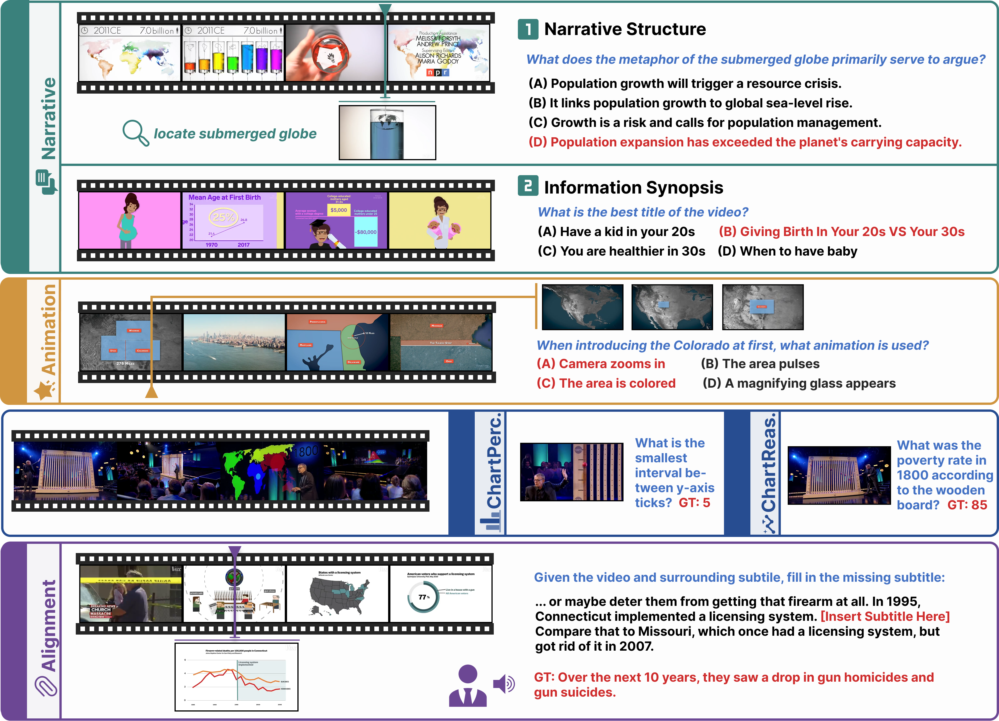
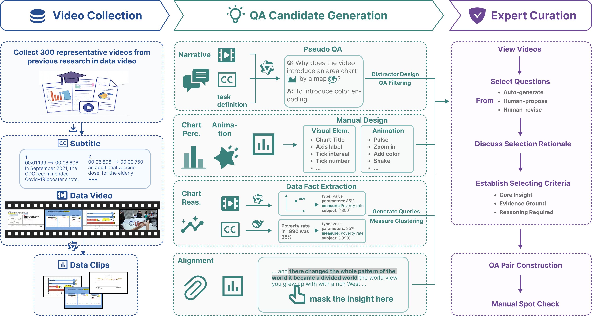
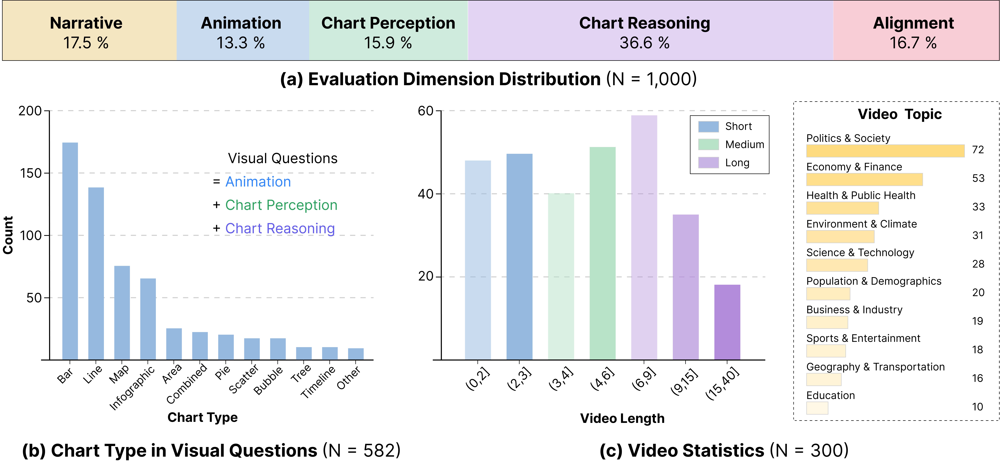

Narrative
High-level storytelling logic, topic, intent, and communicative stance.
1Fudan University · 2The Hong Kong University of Science and Technology (Guangzhou)
*Equal contribution †Corresponding author
EMNLP 2026 Findings
While MLLMs have made significant strides in chart comprehension and video understanding, current evaluations largely isolate these capabilities, leaving a critical gap in understanding temporally evolving structured visual information. We introduce DVBench, a benchmark for evaluating MLLMs on data videos—a storytelling medium that integrates dynamic charts with structured narratives. DVBench contains 300 real-world data videos and 1,000 human-verified QA pairs curated through a rigorous semi-automated pipeline. Evaluations of nine MLLMs show that Gemini 3.1 Pro achieves the best overall performance, while Kimi K2.5 is the strongest model in the paper's open-source grouping.

High-level storytelling logic, topic, intent, and communicative stance.
Dynamic transitions across visual elements, annotations, camera, and pacing.
Direct reading of titles, axes, legends, ticks, labels, and values.
Higher-level insights inferred across visual elements and video frames.
Reconstruction of masked narration from visual evidence and subtitle context.

The benchmark is constructed in three stages: (1) video collection, (2) QA candidate generation, and (3) expert curation. We collect videos from previous research and download the videos and subtitles. Then we utilize MLLM to identify data clips. During QA candidate generation, we employ dimension-specific strategies: Narrative questions are generated via MLLMs and undergo rigorous distractor design and filtering; Chart Perception and Animation questions are manually curated to target fundamental visual elements and dynamic transitions; Chart Reasoning utilizes an automated pipeline to extract, formalize, and cluster data insights for complex cross-frame queries; and Alignment questions are formulated as subtitle cloze tasks. Finally, annotators establish selection criteria and conduct benchmark curation and verification

The 1,000 questions span five dimensions, diverse chart types, video lengths from under 30 seconds to about 37 minutes, and ten real-world video topics.
| Model | Closed-ended Dimensions | Alignment | |||||||||
|---|---|---|---|---|---|---|---|---|---|---|---|
| Avg. | Narr. | Anim. | Perc. | Reas. | BL-2 | MET | BERT F1 | EMS | EMSref | Human Eval. | |
| Human | 91.93 | 87.14 | 90.74 | 95.31 | 94.52 | — | — | — | — | — | — |
| Proprietary Models | |||||||||||
| Gemini-3.1-Pro | 77.91 | 76.57 | 69.92 | 86.16 | 77.87 | 26.77 | 38.20 | 83.02 | 26.49 | 54.83 | 3.95 |
| Claude-4.6-Sonnet | 72.51 | 75.43 | 68.42 | 74.84 | 71.58 | 25.81 | 38.26 | 83.28 | 27.17 | 54.55 | 3.89 |
| GPT-5.4 | 65.31 | 69.14 | 63.91 | 68.55 | 62.57 | 19.88 | 31.68 | 77.67 | 26.55 | 52.93 | 3.71 |
| Open-source Models | |||||||||||
| Kimi-k2.5 | 75.87 | 72.57 | 72.18 | 83.65 | 75.41 | 25.77 | 41.22 | 83.09 | 27.48 | 54.89 | 3.97 |
| Qwen3.5-27B | 62.30 | 74.29 | 59.40 | 64.15 | 56.83 | 17.81 | 27.57 | 79.21 | 26.25 | 52.73 | 3.48 |
| Qwen3.5-397B-A17B | 61.82 | 73.14 | 62.41 | 64.78 | 54.92 | 16.94 | 26.18 | 76.77 | 25.89 | 52.52 | 3.25 |
| Qwen3.5-122B-A10B | 59.30 | 70.86 | 58.65 | 62.26 | 52.73 | 12.96 | 21.74 | 77.61 | 25.78 | 51.96 | 3.00 |
| Gemma-4-31B-It | 58.82 | 64.00 | 57.89 | 60.38 | 56.01 | 16.53 | 25.75 | 78.18 | 26.26 | 52.65 | 2.95 |
| Qwen3.5-9B | 52.82 | 55.43 | 54.89 | 61.01 | 47.27 | 8.20 | 16.07 | 73.98 | 25.45 | 50.41 | 2.73 |
The four closed-ended dimensions are evaluated by accuracy. Alignment reports BLEU-2, METEOR, BERTScore F1, EMScore, EMScore-ref, and five-point human evaluation. Bold and underlined values denote the best and second-best MLLM results, respectively.
The Timeline layer is particularly challenging, with nearly all models below 37.50% accuracy. Current MLLMs struggle to perceive how animation pace changes over time, including acceleration and deceleration.
Aggregation is among the hardest reasoning categories. Several open-source models achieve only around 40% accuracy when counting condition-matching elements across dynamic charts and multiple frames.
Proprietary models and Kimi K2.5 generally ground Data Insight better than Data Context, while other open-source models drop more sharply on Data Insight. The gap is driven mainly by visual-text grounding errors rather than phrasing differences.
Leading proprietary models and Kimi K2.5 remain stable beyond six minutes, whereas weaker models decline almost linearly. Narrative understanding stays comparatively stable, but fine-grained visual tasks often fall below 50%.
Performance does not improve monotonically with denser sampling. Across all tested Qwen3.5 models, 2 fps underperforms 0.5 and 1 fps, showing that additional frames do not necessarily provide more useful evidence.
Subtitles improve every model on average, with gains concentrated in Narrative and Chart Reasoning. For Qwen3.5 and Gemma, Chart Reasoning improves by 7.92–11.47 points, while visual-perception gains are smaller and less consistent.
If you find DVBench useful for your research, please cite our work.
@misc{wang2026dvbench,
title={DVBench: Benchmarking MLLMs for Understanding Dynamic Charts and Narratives in Data Videos},
author={Wang, Bomiao and Shao, Zekai and Lan, Jiexiang and Fu, Xiaoliang and Zeng, Xingchen and Chen, Siming},
year={2026},
eprint={2608.29711},
archivePrefix={arXiv},
primaryClass={cs.CL},
url={https://arxiv.org/abs/2608.29711}
}